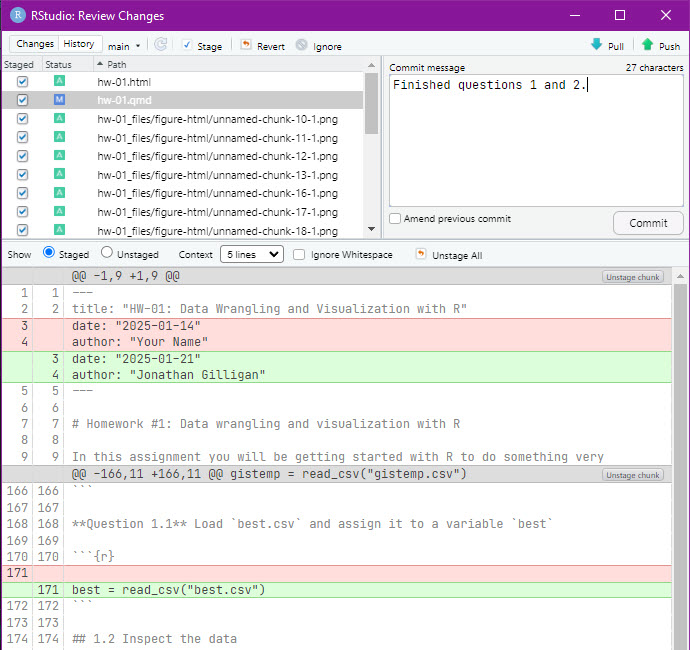

Reproducible Research
EES 4891/5891
Probability & Statistics for Geosciences
Jonathan Gilligan
Class #5: Tuesday, January 21 2025
Learning Goals
Learning Goals for Today
- Understand what reproducible research is, and why it’s important
- Learn about version control
- Know how to manage revisions with
gitandGitHub
- Know how to manage revisions with
- Understand how to use
Gitin RStudio projects - Learn about using
RMarkdownandQuartofor literate programming and reproducible research methods.
Getting Started
Go to GitHub Classroom and accept the project at https://classroom.github.com/a/Hg3m9DoE

Reproducible Research
Reproducible Research
- Science is supposed to be reproducible
- Scientific laws assume that anyone testing them will observe
consistent results
- Radioactive decay of \(^{14}\mathrm{C}\) occurs at the same rate in every laboratory.
- Melting point of pure quartz is the same in every laboratory.
- Scientific laws assume that anyone testing them will observe
consistent results
- Engineering, medecine, economics, business, … are less precise.
- But reproducibie analyses are important:
- Research should reproduce statistical patterns.
- Applied work (clinical medicine, engineering designs, business records) should be accurate.
- But reproducibie analyses are important:
- Clarity & Transparency
- Build trust by sharing all the steps of the work
- Avoid errors by making it easy to check your work
- Simplify correcting errors, by automating analysis and reporting
- Speed up routine analysis and reports
Urgency of Reproducible Methods
- Fraud thrives where methods and details are secret
- Jan Hendrik Schön
- Physicist at AT&T Bell Labs 1997–2002
- Published dozens of papers per year
- Claimed many major breakthroughs
- No one else could reproduce his results
- 2002: Researchers discovered he was re-using graphs
- An investigation revealed massive fraud
- None of the other scientists working with him asked to witness his experiments or review his analyses.
Honest Error
- London Whale: JP Morgan-Chase lost $6.2 billion because of a spreadsheet error.
- UK Public Health Service undercounted 16,000 COVID cases.
- Many European countries made policy based on a flawed economics analysis.
- 16% of papers in 8 top medical journals have strong indications of fraud or incompetent analysis.
- Errors in computer code led scientists to think satellites showed global cooling.
- Psychology has been experiencing a “crisis of replication” where many major results can’t be reproduced.
Response: Reproducible Research
- To restore trust and confidence in research:
- Document everything clearly:
- Methods for collecting data
- Methods for analyzing data
- Make sure everything is clear and detailed
- Make code and data publicly available
- Archive code and data to keep it available over time
- Document everything clearly:
- Reproducibility doesn’t just mean reproducing the exact result:
- It’s also being able to make changes and exploring their consequences
Reproducibility Spectrum
Literate Programming
-
Reading & understanding someone else’s computer code is difficult
-
Literate programming (D. Knuth, 1984)
- Integrate code with text that clearly explains it
- Explanations:
- How it works
- What it does
- How to use it
Testing Code
- Unit testing
-
Assume your code has errors
Write tests to catch errors
-
- Fake Data (Gelman, 2009)
- Before analyzing research data, test your analysis with “fake data”
- Generate data where you know what the result should be
- Test whether your analysis code gets the right answer
Using git and GitHub
Tracking Changes
- Your data-analysis code works, and you edit it to add some new capabilities, and it breaks down.
gitcan remember all the changes you make.- If you edit your code and it breaks, you can see what you changed.
- You publish a paper using your code
- You keep working on the code, adding new features.
- Two years later, someone asks a question about the paper.
- Can you recreate the code from that paper, to answer their question?
What git does
- Organize each project in a folder & subfolders
- Workspace: The files and folders in your project
- Repository: The records
gitkeeps of your changes- You decide when to record changes
- Stage: select changed files that you want to track
- Commit:
gitmakes a snapshot of the changes in all the staged files and records it in the repository- A commit records changes in multiple files
- The repository contains a record of the current state of your project (as of the last commit), and all the previous commits.
- You can easily recover all the files the way they were at any previous commit
- You decide when to record changes
- You can push or pull commits
to synchronize two different repositories
- A local repository on your computer and a remote repository somewhere else (e.g., on GitHub)
Git structure
Git Process
Working with git and RStudio
- RStudio works with projects: Collections of files in a folder and subfulders
- Each project you work on should be in an RStudio project
- Use RStudio’s “New Project” commant to make a new project
- If you’re creating a project from a GitHub repository, use the RStudio “New Project” and choose “Version Control”, and then put the URL for the GitHub project into the box
Creating a New Project
Creating a New Project
Creating an RStudio Project from GitHub


Working with Git in RStudio Projects
- The
gitpanel shows which files have been changed:- New (added) file
- Modified file
- Deleted file
- Renamed or moved file
- The “Diff” button examines changes in text files
- The “Commit” button lets you stage and commit changes
Viewing File Differences
Staging and Committing Changes
Stage individual files by checking boxes
-
When you’re ready to commit:
- Write a comment in the comment box, describing the commit.
- Click the “Commit” button
-
After you commit, RStudio will remind you that your local repository is out of sync with GitHub
- Click on the “Push” button to send your recent commits to GitHub
- The “Pull” button will check whether GitHub has commits that aren’t on your computer, and pull them down.

Using Quarto and
RMarkdown
- Based on the Markdown standard for formatting with plain text.
- RStudio has added a visual WSYWIG editor that lets you format
without knowing Markdown codes.
- You can toggle back and forth between “Code” and “Visual” modes.
- Click on “Render” to turn your Quarto document into a formatted
HTML or PDF document.
- It can also export to Word, Powerpoint, and other formats.
History:
- Yihui Xie, a graduate student in statistics. got interested in
reproducible research and developed
knitrto integrate different kinds of textual markup with R to make reproducible documents. - Later, he was hired by RStudio and developed the
RMarkdown, which allowed sophisticated integration of R into producing many kinds of documents. - Many people wanted to use RMarkdown with other languages, such
as Python and Julia,
- and there was also interest in integrating RMarkdown with the Jupyter notebook system
- Quarto combined features of Jupyter, RMarkdown, and other systems.
- It is very powerful and customizable
Some basic RMarkdown:
- Headings:
#,##,###, … - Lists:
-
Bulleted:
* blah blah blah * blah blah blah * foo foo foo * blah blah blah -
Numbered:
1. first item 2. second item a. Multiple levels b. And so forth b. Labels increment automatically #. third item #. fourth item
-
- Text formatting:
-
**bold**= bold -
_italic_= italic
-
-
Block quotations:
> This is a block quotation > that goes on for several > lines > > With multiple paragraphs inline R code `
r sqrt(2)`-
Hyperlinks:
-
<https://vanderbilt.edu>makes https://www.vanderbilt.edu -
[Vanderbilt](https://www.vanderbilt.edu)makes Vanderbilt
-
-
Images: